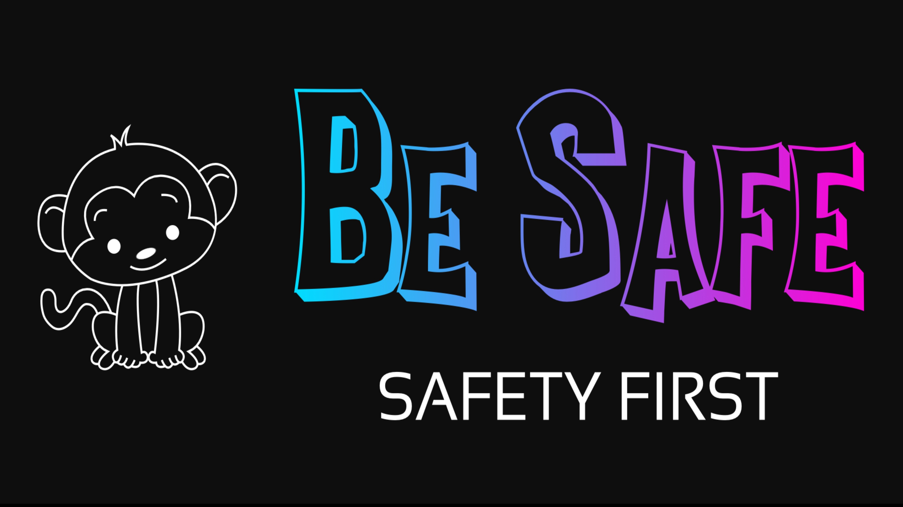

Talking to your child about bullying
Oftentimes, children do not know what to do if a person is being bullied or if they are being bullied. It is important to let your child know that someone might be feeling sad, frightened, lonely, wanting to run away and not wanting to go to school if they are being bullied. Keep in mind might also be feeling the same way if they are being bullied.
Tell them that it is important to communicate with you for you to know what is going on and help. Talk to your child about being a bystander, or someone who sees or knows that bullying is happening. Make it clear that kids who are being bullied need your help and that others will respect you if you stand up for someone who is being bullied.
Also remember to tell your child not to be afraid of saying or doing anything because they think they will be bullied too. If they are too afraid, tell them to talk to their teachers about doing something about the bullying and remind them that it is more likely that if they don't do anything, the bullying will probably only continue. And finally, show them that THEY can help and YOU can help!
Below is a game to test your child on whether or not they know what to do in a situation where they see someone being bullied: